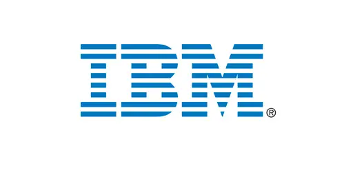

Experiencia Laboral
Técnico capacitación (Analista de Datos)
Bogotá - 13/Octubre/2023 - 31/Julio/2024
- Automaticé procesos de limpieza y cruce de datos, logrando una reducción del 40% en erroresmejorando significativamente la calidad de la información utilizada para análisis.
- Administré y brindé soporte a bases de datos académicas, implementando mejoras que optimizan ltiempos de respuesta a solicitudes, garantizando la seguridad y disponibilidad de la información.
- Desarrollé y mantuve tableros dinámicos en Power BI, que redujeron drásticamente los tiempos consolidación, reestructuración y visualización de datos.

Analista de Datos
Bogotá - 02/Mayo/2023 - 04/Julio/2023
- Creé tableros interactivos en Power BI para consolidar y presentar informes dirigidos a la gerencia y para verificaciones solicitadas por el Ministerio de Educación.
- Elaboré consultas SQL optimizadas y realicé limpieza de datos utilizando expresiones regulares.
- Automaticé procesos y generé informes recurrentes para optimizar la gestión de la información.
- Integré y crucé bases de datos, manteniendo actualizados los tableros en Power BI vinculados a hojas de cálculo de Google Sheets.
Analista de Datos
Bogotá - 19/Septiembre/2022 - 23/Abril/2023
- Implementé procesos ETL automatizados para actualizar informes en tiempo real, logrando reducir el tiempo de entrega en un 80% y mejorando la accesibilidad de los datos para todas las áreas de la compañía.
- Consolidé y procesé datos provenientes de múltiples fuentes, lo que permitió reducir errores en un 40% y garantizar una mayor calidad de la información, facilitando la ejecución de nuevas campañas estratégicas.

Fin & Admin Business Associate
Bogotá - 12/Abril/2022 - 02/Agosto/2022
- Realicé análisis y ajustes en los conceptos facturados a clientes de servicios públicos en España, gestionando además la resolución de reclamaciones presentadas por los clientes.
- Estructuré tablas de datos utilizadas como insumo para alimentar el tablero general de ajustes, facilitando el trabajo de los especialistas.